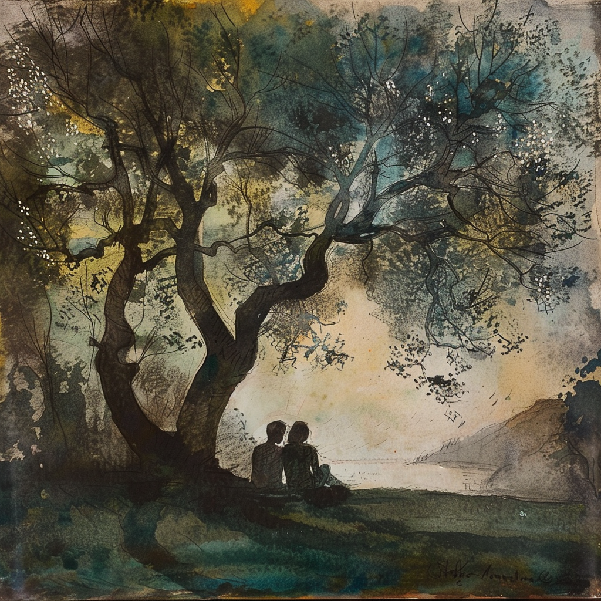

Fear Beneath The Canopy
Nadia and Rocco sat under a one-hundred-year-old oak tree, the sky light grey, clouds moving rapidly, blue sections of the sky appeared then passed, fine drops of rain fell on the tree, but its leaves protected the pair to some degree as they sat side by side.
“Why am I here? why did you summon me, Rocco?”
Rocco sat, his mind concentrating on an answer, her question and tone although nicely made, forced him to focus inward to recall the reason why.
So he focused back to two days ago when his emotions had him tipped over, to the point where he made the decision to call Nadia, and although she didn’t pick up, he held on, leaving a message as her voice prompted then the tone.
He went back to those minutes in his mind, while Nadia sipped on her paper cup of green tea patiently waiting, looking up at the branches of the tree towering above them.
When he made that message on her voice mail, a small weight lifted, as it did that feeling was a marker, he had done the correct thing, but he didn’t in the message state his why or what he just asked her to meet him.
“Fear … Nadia … a deep seating fear that I will not get to where I want to go. “ he paused “It's the fear that I will not get to go where I want in this lifetime” and he sighed and he looked to Nadia at his side. She could see the weight in his body, the weight hanging in his shoulders, in his arms and back. He put his hands in his long black hair and pressed his spine against the trunk of the tree, the two converging wonderfully as one, the tree taking on the weight in his body to give him temporary support.
“why is there this resistance, why can’t I just make things work, why do I have these savage feelings” the pain was evident on his face he looked down with troubled eyes, he looked down at the grass and mud .“will I ever get to where I want to go?”
“you’re unable to remove the restrictions on yourself, you cannot see the majority of them … if any of them, you’re governed by fear Rocco, the fear of rejection, the fear of failure, fear… fear … fear and the final fear of losing it all ... all that you have already created in your world.”
“you're like the person at the bar who tries to quit drinking, you drink cola all night and in the final hour sink four beers. The fear of missing out overcomes you just at the moment of success. It's the final where the fear gets you good and proper, and when it does it's ow so intense.”
“I cannot control it, I cannot control it Nadia I've tried it just gets me, it won't let go like a magnet to metal” Rocco admitted how he felt with immediacy, he got it out and articulate it, that felt great too him.
“There's so much fear it stops you just as you're about to jump the final hurdle, and it's a shame because I’ve never met anyone like you with the opportunities you have”
“My rich friends, they don’t have your opportunities, it takes them so much more work, and you, you just magic contacts, and things and ideas into existence, as if through some divine force of nature, you have so many of them you just cannot actualise them because of fear”
The two of them talk for thirty more minutes backwards and forwards, the questions than answers, short silence then a flourish of manifested thoughts into words. The moisture coalesced on the leaves and dropped onto their heads, as their hair and belongings became damp they barely even noticed the constant exchange so intense.
“So Rocco, the final part, that's where all of your work, your focus must be, that final ten, five, that final one per cent of that particular journey, in that time you must hold your energy in a light place. Stay in your light, my dear Rocco”
“You will do it, Rocco, I AM sure, I AM certain of that,” Nadia said what she said with force and finality and it permeated straight into Rocco's subconscious like an arrow sinking into a deer. Her words were like an arrow shot from a crossbow, hitting its target and that target was the fear inside of Rocco.
The weight had lifted from the man's body, he felt lighter, no longer did he look into himself, he didn't look any more into his past, that had been exercised. Nor the future, there was no need to strategise there.
He felt light, and he smiled. Nadia could see the change in his body. The contrast in his voice from when she replayed the voice message and the change from when they both sat down and started off the afternoon's conversation.
“You know Rocco, I'm just here, I'm just here to make you feel the opposite of how you feel, that's my only job” She pulled her green Prada rucksack in between her legs. Unclipped two chrome clips and loosed the nylon drawstring, she reached inside fumbling around to retrieve her book, beige notebook and expensive pencil.
The Italian stood up to leave but stopped a couple of meters away, Nadia sat down now with her book opened, notepad in her hand, and he towered above her.
“There is something I want to ask you, one last thing today, a thing I have just remembered. Do you think there's something evil out there? I have been scared sometimes, and a few other people have as well, friends, and acquaintances, and they have felt its presence. Things have happened.” he continued “Is there evil in the universe Nadia?”
Nadia now sat in a semi-yoga position with her belongings and smiled “That evil, that evil you see is your own ego, Rocco”.